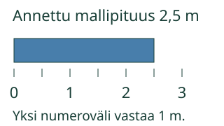
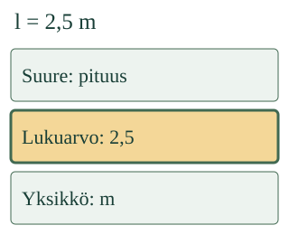

<link rel="stylesheet" href="lesson.css" />


<section data-teaching-step="1" data-lesson-role="teaching-step">
<section class="lesson-intro"><h2>Mikä luku tuloksessa on?</h2><p>Aava merkitsee nauhan pituudeksi <strong>2,5 m</strong>. Pelkkä 2 jättäisi osan pituudesta pois.</p><p><strong>Löydän tuloksesta koko lukuarvon.</strong></p></section>
</section>


<section>


<section data-teaching-step="2" data-lesson-role="teaching-step">
<h2>Ensin pituus, sitten sen merkintä</h2><p>Kuvan annettu mallinauha on kaksi metriä ja vielä puoli metriä. Sen pituus on 2,5 m. Ruutukuva ei ole oikean kokoinen mittanauha.</p><figure data-lesson-role="worked-example"><figcaption>Lukuarvo on 2,5. Yksikkö on m. Yhdessä ne ilmaisevat pituuden arvon.</figcaption></figure><p>Toinen esimerkki: vaa’an annettu lukema on <strong>2,5 kg</strong>. Lukuarvo on taas 2,5, mutta mitattu ominaisuus on massa ja yksikkö kg.</p>
</section>


<section data-teaching-step="3" data-lesson-role="teaching-step">
<figure data-lesson-role="worked-example"></figure>
</section>


<section data-teaching-step="4" data-lesson-role="teaching-step">
<h3>Koko luku mukaan</h3><p>Matkalle on annettu merkintä <strong>s = 12,5 km</strong>. Tässä s tarkoittaa matkaa. Lukuarvo on 12,5, ei pelkkä 12. Desimaaliosa kuuluu lukuun.</p>
</section>


<section data-teaching-step="5" data-lesson-role="teaching-step">
<p data-lesson-role="question"><strong>Mieti:</strong> kertovatko 2,5 m ja 2,5 kg saman ominaisuuden arvon?</p><details data-lesson-role="answer"><summary>Katso ajatus</summary><p>Eivät. Lukuarvo on sama, mutta pituus ja massa ovat eri suureita. Yksikköä ja tilannetta ei saa hukata.</p></details>
</section>


</section>


<section>
<section data-teaching-step="6" data-lesson-role="teaching-step">
<section><h2>Tutki ja kokeile</h2><p>Mallin korostusta saa vaihtaa. Harjoituksen merkintä valitaan erikseen; mallin katselu ei muuta kysyttyä lukua.</p></section>
</section>

<section data-teaching-step="7" data-lesson-role="teaching-step">
<section><div data-numerical-value><p>Ratkaise annetun tuloksen tehtävä. Malli on valinnaista tukea.</p></div><noscript data-lesson-role="metadata"><p>Kirjoita paperille lukuarvot merkinnöistä 2,5 kg, s = 12,5 km ja 40 s. Ne ovat 2,5, 12,5 ja 40.</p></noscript><details data-lesson-role="hint"><summary>Apua</summary><p>Etsi tuloksen luku kokonaisena. Tässä kirjoitetaan vain luku, ei yksikköä. Pilkku ja piste käyvät: 12,5 ja 12.5 ovat sama lukuarvo. Myös 12,50 käy.</p></details></section>
</section>
</section>


<section data-teaching-step="8" data-lesson-role="teaching-step">
<section><h2>Uusi tilanne: lyhyt reitti</h2><p>Reitin pituus on <strong>0,25 km</strong>. Lukuarvo on 0,25, ei 0. Yksikköä km ei kirjoiteta lukuarvon osaksi.</p></section>
</section>


<section data-teaching-step="9" data-lesson-role="teaching-step">
<details data-lesson-role="teaching-step"><summary>Tutki lisää: sama pituus, eri lukuarvo</summary><p>2,5 m voidaan kirjoittaa myös 250 cm, sillä 1 m = 100 cm. Pituus ei muuttunut. Lukuarvo muuttui, kun yksikkö vaihtui. Muunnos on annettu; sitä ei tarvitse laskea tässä.</p></details>
</section>


<details class="teacher" data-lesson-role="teacher-note"><summary>Opettajalle: tavoite ja rajat</summary><p>Vuosiluokat 7–9. Vaadittu PHY79-QTY-CONCEPT. M-MEAS-01 ja M-NUM-14 ovat vahvaa tukea, eivät uusia portteja. Desimaalimerkintä annetaan ja selitetään; laskemista desimaaleilla tai muuntamista ei vaadita. Suureen arvo ja sen lukuarvo erotetaan, ja yksikköön sidonnaisuus näytetään.</p><p>Suureen tunnus voi muistuttaa yksikkömerkkiä: m voi nimetä massan, mutta pituuden yksikkönä m tarkoittaa metriä. Lue määritelmä ja koko tilanne, älä päättele vain kirjaimen ulkoasusta. Tunnukset eivät ole tämän tehtävän uusia muistivaatimuksia.</p><p>Vastauksessa hyväksytään saman luvun desimaalimuodot, myös etunollan tai lopun nollien kanssa. Tieteellinen merkintä ja luvun ryhmittely välilyönnein eivät kuulu tähän rajattuun syöttimeen; niitä ei kutsuta eri lukuarvoksi. Luokittelu on annettujen osien harjoittelua, ei vapaan mittausmerkinnän kirjoittamisen näyttö.</p><p>Offline: mittaa turvallisesti aikuisen kanssa tai käytä annettua tulosta. Ympyröi koko lukuarvo ja selitä, miksi yksikkö säilyy koko tuloksessa. Ruudun mallit eivät todista mittavälineen käyttötaitoa, itsenäisyyttä tai viivästettyä muistamista. Ei pisteitä, henkilöhistoriaa, hallintapäätelmää tai väitettä oppimisvaikutuksesta.</p></details>


<section data-teaching-step="10" data-lesson-role="teaching-step">
<p data-lesson-role="question"><strong>Lopuksi:</strong> miksi 12 ei ole koko lukuarvo merkinnässä 12,5 km?</p>
</section>


